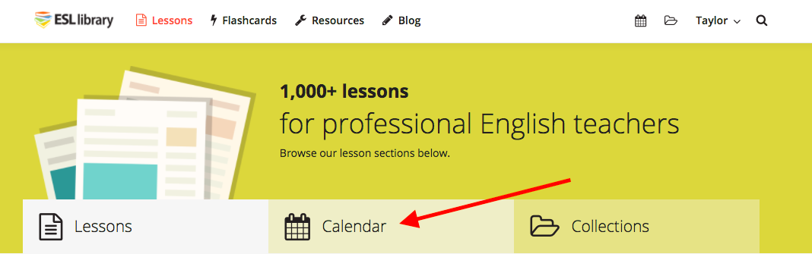
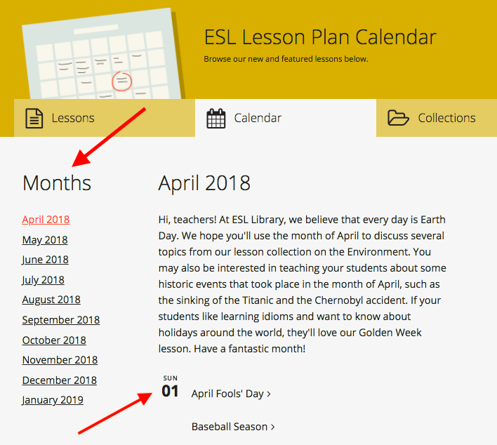
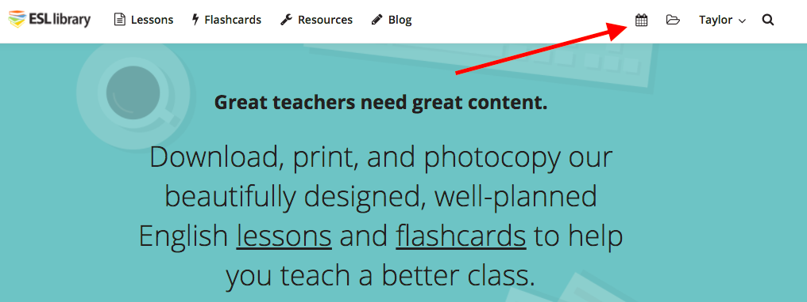
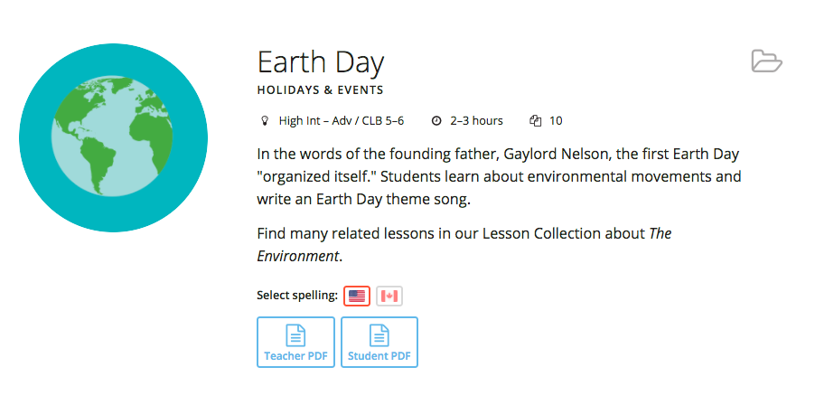

نحوه استفاده از ابزار پوشه ها
ابزار پوشه ESL Library یک گزینه فوق العاده برای سازماندهی درس هایی است که می خواهید برای استفاده در آینده صرفه جویی کنید. با تمام مواد موجود در کتابخانه ESL، صرفه جویی در درس به پوشه های سفارشی خود، به شما در برنامه ریزی و صرفه جویی در وقت کمک خواهد کرد.ویدئو
در اینجا یک ویدیو برای نشان دادن نحوه ذخیره درسهای کتابخانه ESL در پوشه ها است:دستورالعمل های گام به گام
همچنین می توانید مراحل زیر را برای یافتن و استفاده از ابزار پوشه ها انجام دهید.مرحله 1
وارد حساب کاربری خود شوید: ورودمرحله 2
هنگامی که شما با موفقیت وارد سیستم شوید، به صفحه درس مراجعه کنید (نگاه کنید به زیر).
مرحله 3
پس از فرود در صفحه درس های ما، می توانید بخش های درس را مرور کنید تا یک کلاس مناسب را پیدا کنید. روی هر بخش درس کلیک کنید (به عنوان مثال، گفتگوی روزانه).
مرحله 4
هنگامی که شما در داخل یک درس درس هستید، متوجه خواهید شد که هر درس یک آیکون پوشه کوچک سیاه را در زیر دارد. با کلیک بر روی آیکون شما می توانید این درس را به یک پوشه خاص ذخیره کنید. اگر آیکون در حال حاضر در رنگ آبی پر شده است، سپس این درس در یک پوشه ذخیره شده است.
مرحله 5
با کلیک بر روی آیکون پوشه یک جعبه با دو زبانه ظاهر می شود. "انتخاب پوشه" را انتخاب کنید تا درس را به یک پوشه موجود اضافه کنید یا "ایجاد پوشه" را برای شروع یک پوشه جدید انتخاب کنید. اگر شما هیچ پوشه موجود ندارید، تنها گزینه ایجاد یک پوشه جدید با وارد کردن یک نام پوشه و توضیحات اختیاری خواهد بود. برای تکمیل هر اقدام، روی دکمه "ذخیره" کلیک کنید.
مرحله 6
اگر روی یک درس خاص کلیک کنید، میتوانید با کلیک کردن روی نماد پوشه در بالا سمت راست، آن را از هر صفحه پیشنمایش درس ذخیره کنید.

مرحله 7
پس از کلیک کردن روی آیکون پوشه، پوشه موجود را که می خواهید درس را ذخیره کنید را انتخاب کنید (یا یک پوشه جدید ایجاد کنید) را انتخاب کنید. برای تکمیل عمل روی دکمه "ذخیره" کلیک کنید.
مرحله 8
برای دسترسی به پوشه های خود، روی برگه پوشه های من در نوار ناوبری در بالای هر صفحه کلیک کنید.
مرحله 9
در صفحه Folders درس شما می توانید بر روی عنوان پوشه کلیک کنید تا درس های درون پوشه را مشاهده و چاپ کنید. شما همچنین می توانید هر پوشه را اضافه یا حذف کنید یا نام و توضیحات پوشه های خود را در این صفحه ویرایش کنید.
ما امیدواریم که ابزار پوشه به شما کمک می کند تا زمان صرفه جویی کنید و سازماندهی کنید! لطفا در صورت استفاده از پوشه ها سؤال یا پیشنهادات خود را به ما بفرستید.
تماس با ما